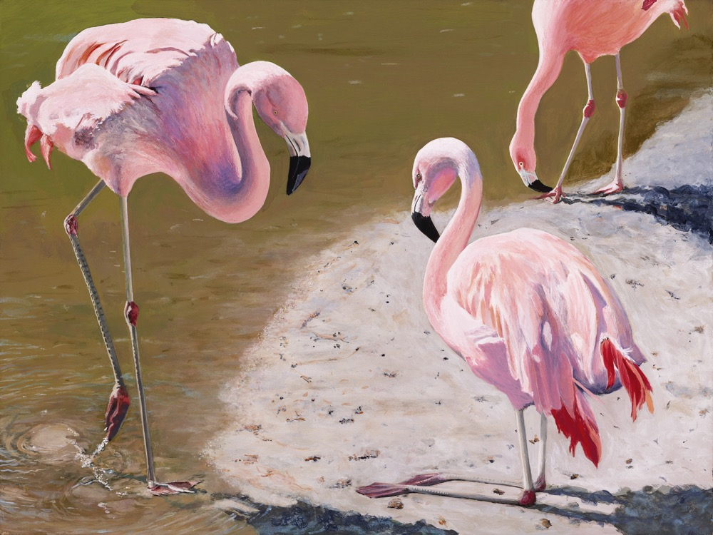
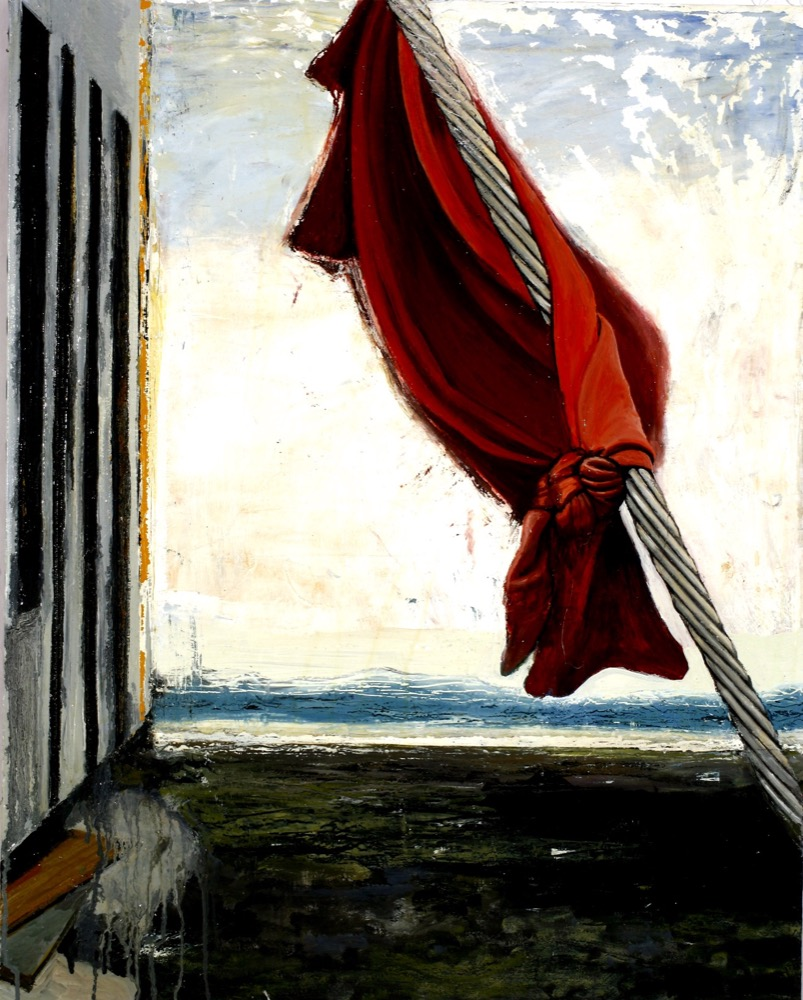
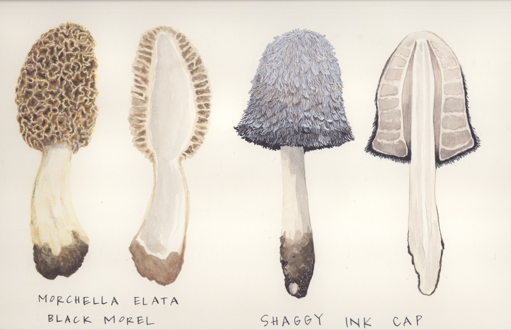

Eve Alyson
About
Eve is a Seattle native whose work includes classical painting, drawing, watercolor, photography, graphic design, collage, textile arts and welded metal sculpture. Eve studied Art at the University of Washington and the Facultée des Lettres in Avignon, France, before transferring to The Rhode Island School of Design, where she received her B.F.A. with a major in Fine Arts Photography. She has earned a certificate in scientific illustration from the UW and has just completed the Aristides Classical Painting Atelier at the Gage Academy of Art in Seattle.


